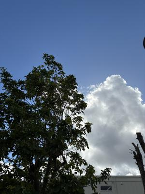
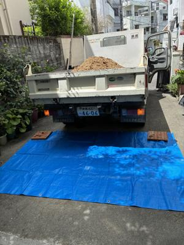
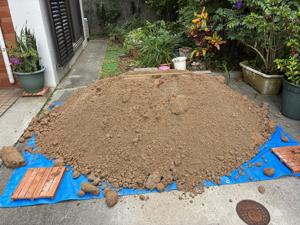
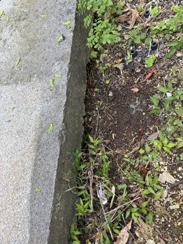
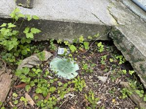

うるがいの話 ある日
最新: １．５トンの土【うるがいの話 ある日】とは 一日だけのプログです
『うるがいの話』の最新一日だけのプログで、通信料が少なく経済的だ。カニの画像をクリックすると全ての日付が載る『うるがいの話』サイトを表示します
|
|
【うるがいの話】 うるがい(ｳﾙｶﾞｲ urugai)とは、『もずくがに』の名前でとても大きくなります。 |
|---|---|
|
|
【カミマヤーの話】 猫のことを方言でマヤーといいます。カミマヤー（kamimayaa）とは、神の猫のことです。 |
|
【たながぁの音楽】 たながぁ（ﾀﾅｶﾞｰ tanagaa）とは手長えびのことで、何種類かあり大きいのは車 エビぐらいになります。 |

|
【ぶながぁの話】 ぶながぁ(ﾌﾞﾅｶﾞｰ bunagaa)とは、赤い髪の毛、赤い身体、そして身長は１ｍ２０ｃｍ ぐらい、川の蟹を食べているの目撃された。場所は沖縄県国頭郡大宜味村のと ある村僕の隣近所に住んでいる爺さんから、聞いた話です。 |
|
|
【ギーマの話】 ギーマ(giima)とは、山原の里山に咲くスズランに似た、 花を付けます。実は食べられます、 気が付くと口の周りが紫になっています。 |
2026年05月21日 (木）１．５トンの土
18:38

『あ、電話を取らないので別の所へトラックは出かけました、戻
り次第、行かせます』、ン、１０時に土を入れる予定、着信履歴
をみると９時過ぎに２度、電話がある。いやー、またかい。事前
に電話をするとは、言ってなかった。雨で中止の時は、連絡入れ
ますという約束だったが・・・。結局、一時間遅れの１１時にな
った。
２トントラック

１．５トンの土（砂混じり赤土）

運転手が、引き上げるとき明日は雨ですから、今日中にしないと
いけないですね、と。


裏庭の住宅仕切りのブロックと、地盤沈下してしまった地面。
１５センチほど、下がっているのでしょうか。シロアリ駆除のた
めの容器が、かなり沈み込んでいる。
あ、クラー付けました。いきなり、暑くてなりましたね。